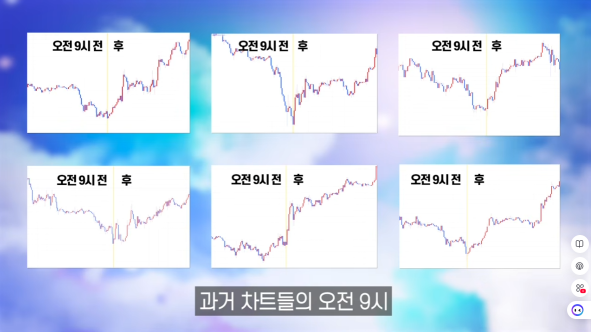

1️⃣ 추세확인 : 1시간봉, 상승추세에서는 매수타점만 하락추세에서는 매도타점만 생각
2️⃣ 사냥시간 : 9시~10시(1h), 횡보박스에서 하락시킨후 물량매집 ⇒ [눌림]손절매물량/[돌파]실망매물/패닉셀
3️⃣ 페어밸류갭(Fair Value Gap)
√ 3개의 강한 상승캔들중, 가격이 안겹치는 1번고점과 3번저점 사이의 가격대
√ 급등시 공간을 채우려고 슬금슬금 FVG까지 하락, 강한 지지선 역할 ⇒ 매수타점
√ 수익극대화 피보나치되돌림 -2 ~ -2.5사이
4️⃣ 수요존과 공급존
√ 수요존 : 하락하다가 매도세를 완전히 압도하는 첫양봉캔들 공간, 지지구간 (매수/손절선)
√ 공급존 : 반대로 상승하다가 매수세를 압도하는 첫음봉캔들 공간, 저항구간 (익절선)
5️⃣ 이 매매법의 장점은 압도적인 손익비 !!!
1️⃣ 추세확인
2️⃣ 사냥시간
3️⃣ 페어밸류갭(Fair Value Gap)
4️⃣ 수요존과 공급존
5️⃣ 이 매매법의 장점은 압도적인 손익비 !!!
인사이드바 캔들
삼법형 캔들
모닝스타/이브닝스타 캔들
적삼병/흑삼병 캔들
유동성사냥 실전매매 활용법

현재이미지_idx / 총이미지수